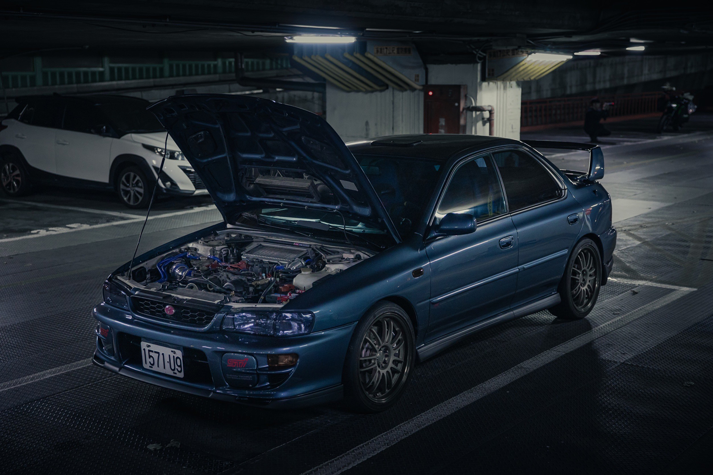

Subaru Impreza GC8

Subaru Impreza GC8 是第一代 Subaru Impreza 的車型代號，於1992年至2000年間生產。GC8 車型採用了 SUBARU 自主開發的全時四輪驅動系統，並且配備了具有高性能的 Boxer 引擎。這款車以其卓越的操控性和越野能力而聞名，被廣泛用於 WRC（世界拉力錦標賽）和其他賽車活動。GC8 推出了多個車型，包括四門轎車、五門掀背車和旅行車等，其外觀獨特且具有運動風格。此外，GC8 的室內空間和後行李箱空間也得到了不少讚譽。至今，Subaru Impreza GC8 仍然受到許多車迷的喜愛和追捧，成為了 Subaru 車系中的經典之一。